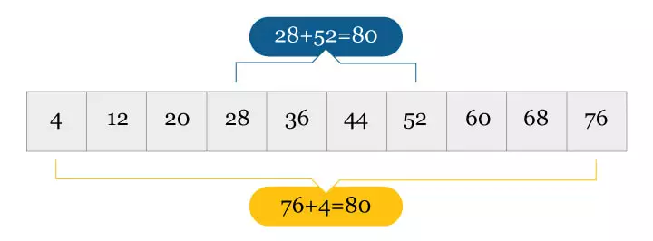
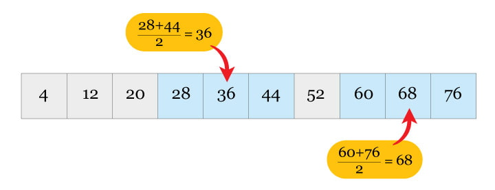
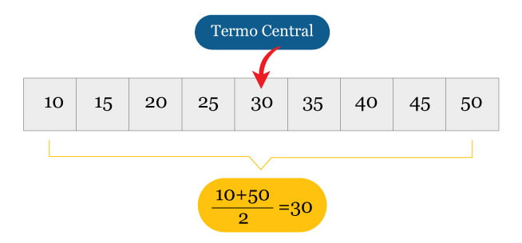
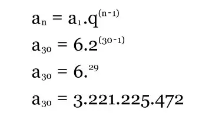
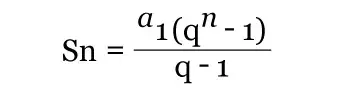
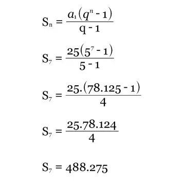
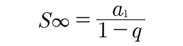
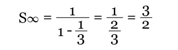

Uma Progressão Aritmética (PA) é um tipo específico de sequência onde a diferença entre dois termos sucessivos é uma constante.
Matematicamente falando, a soma dos termos de uma PA pode ser expressa pela seguinte fórmula:
S = a + nd
onde:
a é o primeiro termo da sequência. n é a quantidade de termos. d é a diferença entre dois termos sucessivos.
Por exemplo, considere a sequência 5, 8, 11, 14 ... Nesse caso, a diferença entre dois termos sucessivos é sempre d = 3. Portanto, a soma dos termos pode ser expressa como:
S = 5 + 3(1 + 2 + 3 + ...) S = 5 + 3(n-1)
Isso significa que a soma dos termos de uma PA pode ser facilmente encontrada, desde que a quantidade de termos seja conhecida.
1ª propriedade: em uma PA finita, a soma dos dois termos equidistantes é igual à soma dos extremos. 
2ª propriedade: tendo em vista os três termos consecutivos de uma PA, o termo médio é igual a média aritmética dos outros dois termos. 
3ª propriedade: em uma PA finita e ímpar, o termo do meio será igual a média aritmética do primeiro termo com o último termo. 
Uma PA é dita crescente se cada termo, a partir do segundo, é maior que o termo anterior. Nesse caso a razão é sempre maior que zero. Exemplo: (-1, 0, 1, 2, 3...) r = 1
Uma PA decrescente cada termo, a partir do segundo, é menor que o termo anterior. Nesse caso a razão é sempre menor que zero. Exemplo: (-3, -6, -9, -12 …) r = -3
Uma PA é constante ou estacionária quando todos os termos são iguais. Nesse caso a razão é sempre igual a zero. Exemplo: (1,1,1,1,1...) r = 0
Progressão Geométrica (PG) é uma continuidade numérica em que a divisão de um termo com o seu anterior, exceto o primeiro, resultará em um único valor, a chamada razão (q), ou seja:
PG: (a1, a2, a3, a4, ..., an) , sendo q = (a2/a1 = a3/a2 = a4/a3,...)
A multiplicação da própria razão (q) também define uma sequência numérica da progressão. Entenda nos exemplos:
PG: (5, 25, 125, 625, …)
Nesta progressão, o valor que determina seu consecutivo é o cinco, ou seja, a sequência é uma PG de razão igual a cinco (q = 5), pois 5 x 5 = 25; 25 x 5 = 125; 125 x 5 = 625 e assim sucessivamente.
Já na PG: (2,4,8,16,32,64, ...) a razão é 2 (q =2), pois 2 x 2 = 4; 4 x 2= 8; 8 x 2 =16 e assim consecutivamente. A razão de uma progressão geométrica é composta por valores constantes e racionais (positivos, negativos e frações), com exceção do zero.
As progressões geométricas são classificadas de acordo com o valor da razão. Elas se dividem em crescentes, decrescentes, oscilantes e permanentes.
Nesse tipo de progressão geométrica a razão é maior que zero e feita por números crescentes:
(9, 27, 81, 243, 729...), no qual q = 3
Na progressão decrescente a razão é maior ou diferente de zero, e os números da sequência serão menores que seus antecessores, ou seja, termos em forma decrescente:
PG: (- 6, -36,- 216, - 1296 ...) no qual q = 6
Na progressão oscilante a razão será negativa e a continuidade vai variar entre termos positivos e negativos:
PG:(2, -4, 8, -16, 32, 64…) no qual q = - 2
Na progressão geométrica constante a razão sempre será igual a 1. Portanto, a sequência terá o mesmo valor.
(6,6,6,6,6...) no qual q = 1
Nessa progressão apenas um elemento da sequência será diferente de zero:
PG: (2,0,0,0,0, 0...)
Agora que você ja compreendeu os conceitos e tipos de progressões aritméticas e geométricas, é hora de se familiarizar ao termo geral!
O termo geral aplica-se para encontrar os valores de uma determinada progressão geométrica:

Sendo:
an: valor desconhecido a1: primeiro termo da sequência geométrica q: razão elevada ao número desconhecido menos 1
Vamos determinar o 30° termo da progressão geométrica com q = 2 e de sequência inicial 6.

A soma dos números de uma progressão geométrica é dada pela seguinte fórmula:

Sendo:
Sn: Soma dos números da PG a1: primeiro termo da sequência geométrica q: razão n: número de termos da PG
Então vamos calcular a soma dos 7 primeiros termos da PG: (25, 125, 625...):

Já a soma dos valores de uma progressão infinita – quando a razão é entre -1 e 1 – necessita da fórmula a seguir:

Desta forma, a soma dos termos de uma PG infinita (1, 1/3 , 1/9 ...) é:
